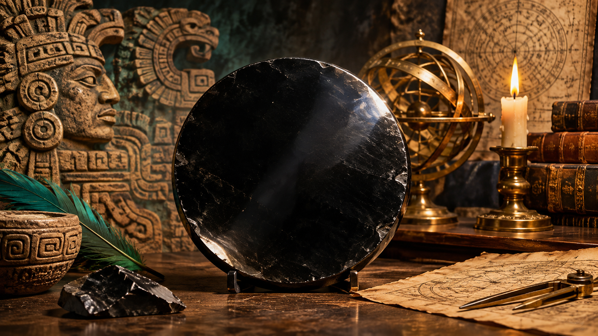

El espejo de Tezcatlipoca que llegó a manos de John Dee
Un espejo de obsidiana de origen mexica atravesó océanos y siglos hasta convertirse en uno de los objetos más enigmáticos asociados al ocultismo renacentista. Su historia conecta el universo simbólico de Mesoamérica con las búsquedas espirituales de un hombre que vivió en la corte de Isabel I.

Un espejo para buscar lo invisible
John Dee (1527–1608/1609) fue matemático, astrónomo, estudioso de la navegación y consejero de la corte de Isabel I de Inglaterra. También exploró prácticas de adivinación y comunicación espiritual, entre ellas sesiones en las que, junto a Edward Kelley, buscaba interpretar mensajes a través de visiones.
En este contexto se encuentra un espejo circular de obsidiana asociado a Dee. La superficie oscura y reflectante de este objeto se relaciona con la práctica conocida como scrying: contemplar una superficie —como un espejo, cristal o recipiente oscuro— con la intención de experimentar o interpretar imágenes y visiones.
El Espejo Humeante y el universo mexica
La obsidiana tuvo distintos usos materiales, simbólicos y rituales en Mesoamérica. En el mundo mexica, el dios Tezcatlipoca, cuyo nombre suele traducirse como «Espejo Humeante», estaba asociado con la noche, el poder, el destino, el conflicto y aspectos complejos del orden cósmico.
Los espejos de obsidiana aparecen en contextos culturales y religiosos mesoamericanos. Sin embargo, no hay evidencia que permita afirmar que este ejemplar concreto perteneciera a un templo de Tezcatlipoca o que fuera utilizado por sus sacerdotes. La conexión es cultural e histórica, no una procedencia individual demostrada.
Pachuca: el origen revelado por la ciencia
Un estudio publicado en 2021 en la revista Antiquity analizó la composición de la obsidiana del espejo y la vinculó con la región de Pachuca, en el actual estado de Hidalgo, México. Este resultado aporta evidencia científica sobre el origen geológico de la materia prima y su conexión con el ámbito mesoamericano.
El análisis, sin embargo, no resuelve cuándo fue elaborado el espejo, quién lo tuvo antes de Dee ni por qué ruta llegó a Europa. Esas partes de su historia siguen abiertas.
De México a las colecciones europeas
Tras la conquista, objetos procedentes de América circularon por Europa mediante redes de intercambio, coleccionismo y apropiación. El espejo pudo haber llegado al continente europeo en ese contexto, pero no se conoce un itinerario documentado que permita reconstruir su viaje exacto hasta John Dee.
Se han planteado posibilidades relacionadas con los contactos continentales de Dee, incluidos sus viajes y estancias en Lovaina o en Europa central, pero son hipótesis, no hechos confirmados. La evidencia disponible no permite escoger con certeza una de ellas.
De Horace Walpole al Museo Británico
La historia documentada de sus propietarios posteriores permite seguir algunas etapas de su recorrido por colecciones europeas. El espejo pasó por distintas manos y llegó a Horace Walpole en 1771. Walpole lo describió en una etiqueta que lo acompañaba como: “The Black Stone into which Dr Dee used to call his Spirits” (la piedra negra en la que el doctor Dee invocaba a sus espíritus).
La etiqueta refleja la tradición que vinculaba el objeto con Dee, aunque fue escrita mucho después de su vida. En 1966, el British Museum adquirió el espejo a Reverend Robert William Stannard por £750. Desde entonces, forma parte de la colección del museo.
Un espejo, dos mundos
Este objeto reúne historias que no siempre podemos reconstruir por completo: la tradición de la obsidiana en Mesoamérica, las búsquedas de un erudito europeo y la trayectoria de un artefacto a través de colecciones y siglos.
Su superficie refleja luz, pero su historia también nos recuerda los límites de lo que sabemos. Entre el dato arqueológico, los registros de coleccionistas y las interpretaciones posteriores, queda un pasado que merece ser explorado con curiosidad y cautela.
Fuentes y lecturas
- Antiquity (2021): “The mirror, the magus and more: reflections on John Dee's obsidian mirror”. Investigación sobre el espejo y su procedencia geológica.
- “The Lord of the smoking mirror: Objects associated with John Dee in the British Museum”. Estudio sobre objetos vinculados a Dee.
- Nature (2021): “A ‘spirit mirror’ used in Elizabeth I’s court had Aztec roots”. Divulgación sobre la investigación y el origen del espejo.
- Google Arts & Culture: Dr Dee's Mirror. Imagen y ficha del objeto.
Alma de Jade — bienestar para ti, cuidado para el mundo.
Continúa tu momento
Tal vez este pequeño encuentro te invite a detenerte un poco más. Puedes continuar tu recorrido con alguno de estos rituales.